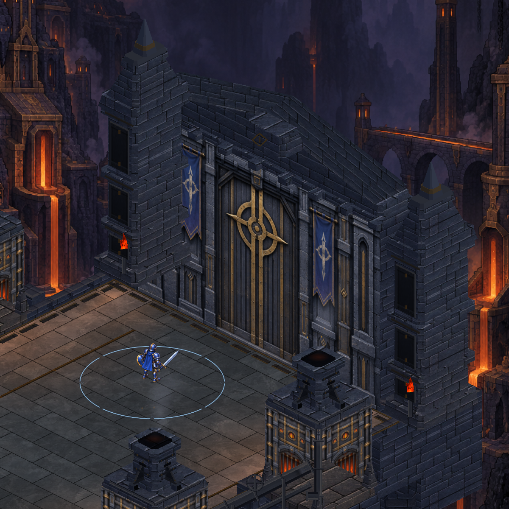
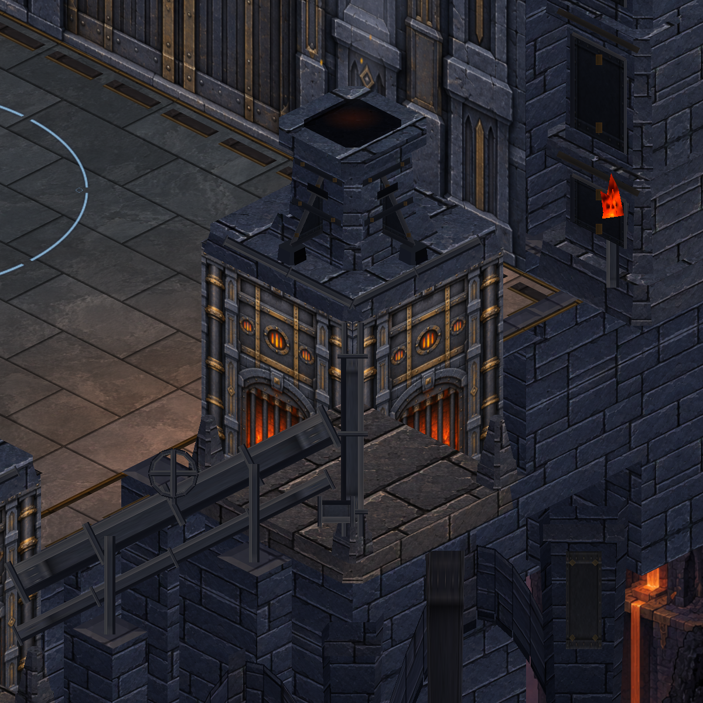
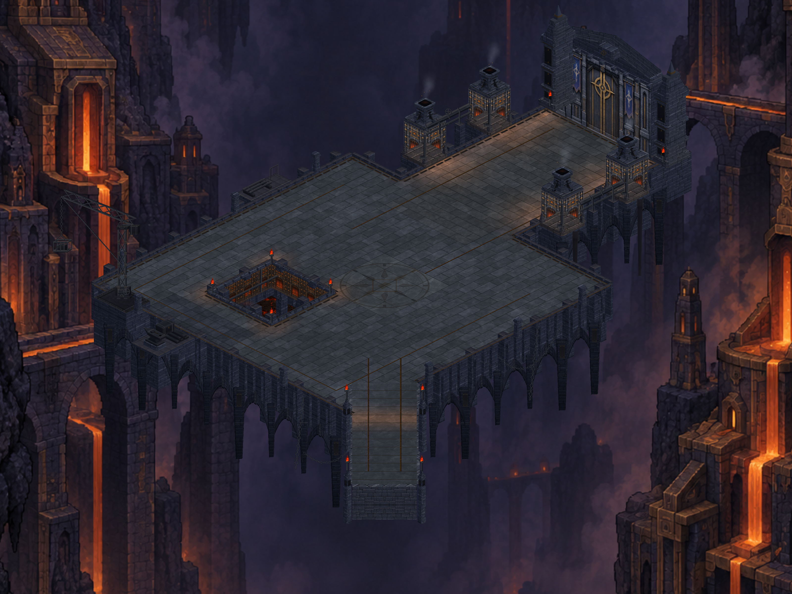

Kapı kulelerinde bronz kuşaklı metal tepelikler, dört fırının bacalarında çatıya oturan destekler. Gerçek Unity görüntüleri; önce ve sonra aynı inceleme açılarını kullanır.



Üretim ve doğrulama kaydı